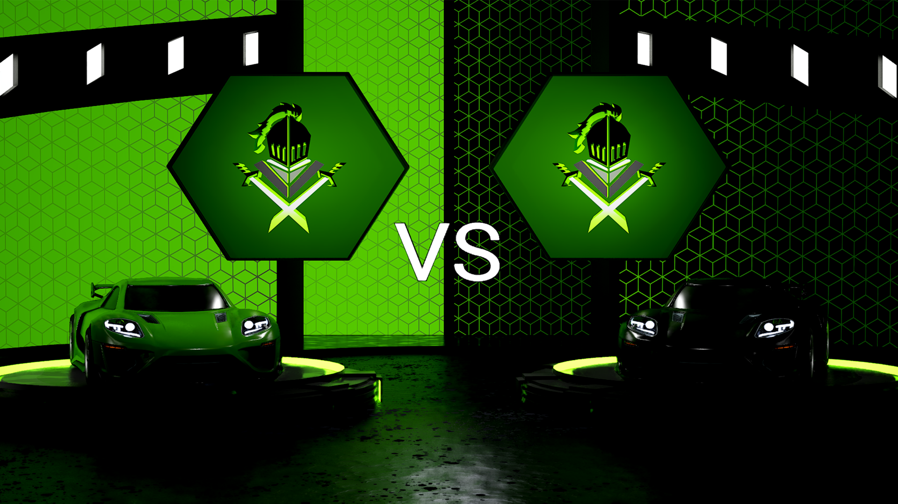

Similar to the Broadcast Sample tha Epic released I created this project to be able to create many renders for matches. I found the Hype Chamber to be missing out on function in many ways so I decided to create my own version while getting a different look while I was at it.
The most notable feature for this project has to be the batch render tool I created. This allows support for all of the additional settings shown below while also being incredibly easy to use and very hands off. You are able to render all the matches you need in one go by adding them at the bottom and using the correct settings. From there you select the batch type at the top to determine which graphics you will have rendered, then just click start render and let Unreal do its job. No longer will you need to babysit all of the renders and deal with switching all the settings around. Just the one click gets everything running for you while also having much better naming schemes right out of unreal so you know exactly what the file is.
Going into creating this project I wanted it to be more versatile and be usable in more scenarios so it wasn't limiting people to one specific need and style.
One of the largest changes I learned while creating the CRL Hype Chamber was the ability to easily switch around teams' colors. The project allows you to use many different variations of color schemes using the selected team's colors.The picture to the right shows the Primary and Black + Primary schemes for the same team.
In addition to the added color scheme controls the project allows for you to disable any material changes and/or switch which material on the mesh is getting switched. This supports people in using this project for more than just rocket league and could be used for any team esport or just sport for that matter. You could get a model of a football helmet and throw that in there if you so desired.